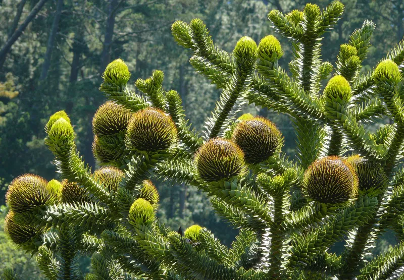
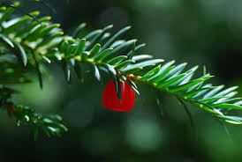
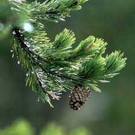
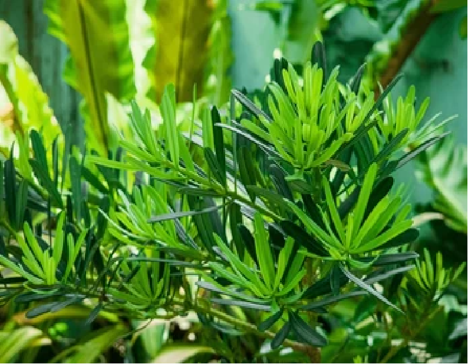
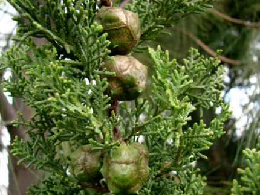
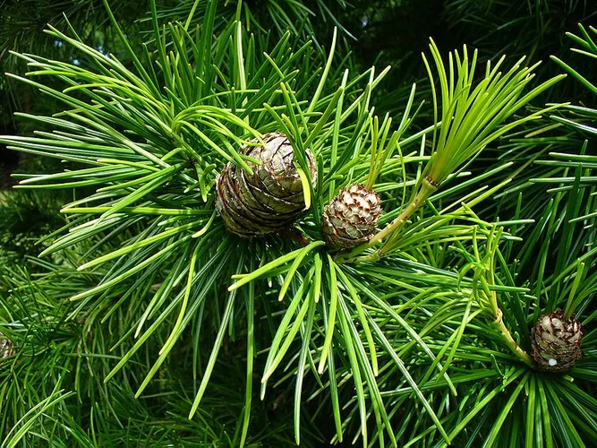

Las coníferas son plantas gimnospermas leñosas caracterizadas por la producción de conos y una gran adaptación a diversos ambientes. Presentan estructuras especializadas como hojas aciculares o escamosas, tejidos resiníferos y semillas generalmente expuestas.

Ejemplos: Araucaria, Agathis

Ejemplos: Taxus, Torreya

Ejemplos: Pinus, Abies, Cedrus, Picea

Ejemplos: Podocarpus, Prumnopitys

Ejemplos: Cupressus, Juniperus, Sequoia, Thuja

Ejemplo: Sciadopitys verticillata